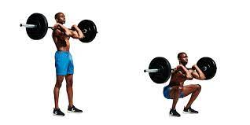
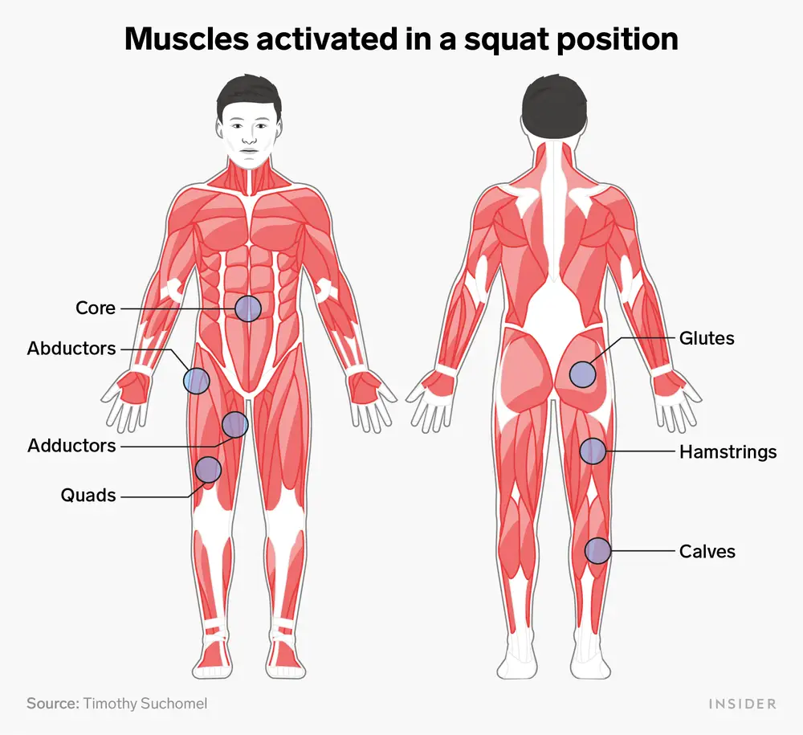

Lower Body Workouts
SQUATS:
How do you do them?
Stand with the bar on your upper-back, or dumbell in your handd in front of you, and your feet shoulder-width apart. Move downwards into a seated position, pushing your knees to the side while moving hips back, and keeping your back straight. Go down into a seated position until your hips are lower than your knees. Stand back up while keeping your knees out and chest up. Stand with your hips and knees locked at the top. Hold the weight for a second at the top, and take a deep breath, then repeat as necessary. This moovement can be performed with just bodyweight aswell. Instead of a barbell or dumbbell, you'd position your hands out in front of you, for balance.
What muscles do they target?
This exercise targets the gluteus maximus, minimus, and medius (buttocks), quadriceps (front of the thigh), hamstrings (back of the thigh), adductor (groin), hip flexors, calves, and the abdominal muscles as well.
How do you do them?